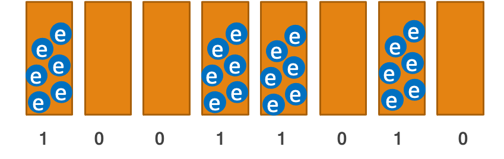
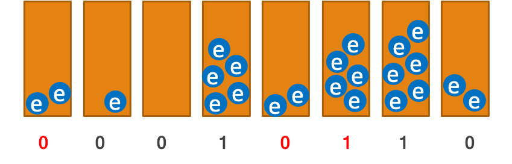
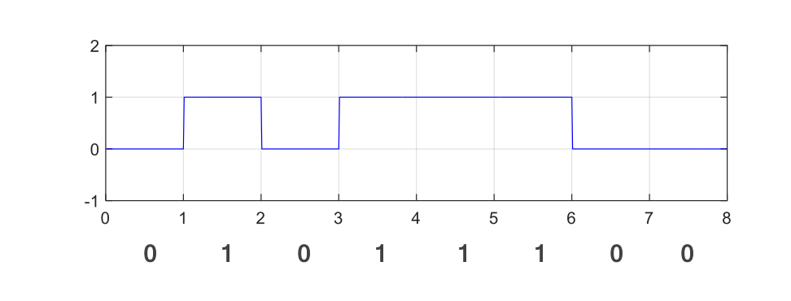
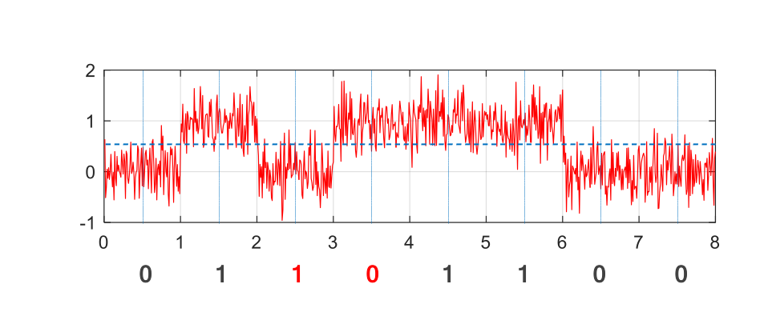
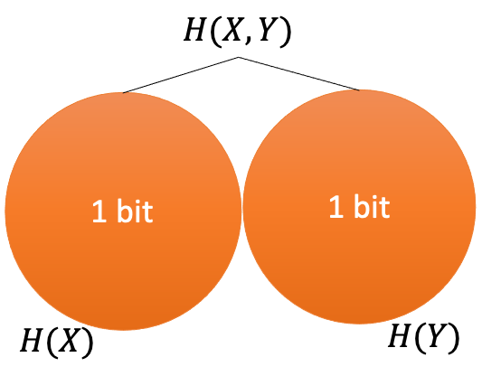
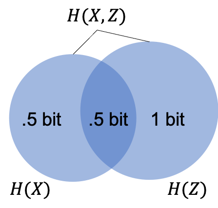

Mathematics of Communications
In communications and storage, we want the signal we transmit or write to be the same as the signal received or read from the medium. In general, we cannot expect an error-free outcome, since real signals get corrupted by noise. One way of quantifying information loss is to measure how much information is shared between the transmitted and received signals. This measure of shared information is called mutual information. Mutual information allows us to determine capacity, i.e., the maximum amount of information that can be stored on a flash drive or transmitted via a WiFi link.
Noise, errors, and channels
Let’s start by examining how noise affects the value of digital signals in a storage device and a communication link.
Flash memory
Conceptually we can think of flash memory as a bunch of buckets, called cells, which we fill with electrons to represent 1 or leave empty to represent 0. Electrons, unfortunately, don’t always stay where they need to and they may leak out, possibly to a neighboring cell. They are also affected by thermal noise. So in reality we may get a different charge level from the one we put on the cell, which leads to bit flip errors.
 |
$\xrightarrow{\text{Noise}}$ |  |
RS-232
For transmission along a wire, we can encode 0 as low voltage and 1 as high voltage. This is used in RS-232. At the other end, we can sample the signal in the middle of each interval. A similar method is used in USB, where the signal is carried by a pair of the wires with opposite voltages (differential signaling). Differential signaling is more robust but still susceptible to noise.
 |
$\xrightarrow{\text{Noise}}$ |  |
Sources of noise
Where does noise come from? A major source of noise is electromagnetic waves, which can interfere with communication and storage devices. Electrical currents and transmitter antennas can create electromagnetic waves. Here are some common sources:
- Power lines
- Motors and electrical appliances (radiating EM waves)
- Fluorescent lights
- Radio, TV, radar transmitters
- Computers, monitors, printers
- Other cell phones, cordless phones
In short, one man’s signal is another man’s noise.
Storage vs communications
The goal of communication is moving information from one location to another, i.e., through space. The goal of storage is typically to carry information in time. Although, storage devices are also used to move data in space (for example, Backblaze allows you to receive your back up on a hard drive instead of downloading it).
Communication channels
To avoid discussing both storage and communication, we often only consider communication. The physical process that carries the information-bearing signal is abstracted as a communication channel, even when we deal with storage.
The channel may for example represent a flash drive or a wireless transmitter/receiver pair.
Binary symmetric channel
For both RS-232 and flash drives, we can model the communication channel as a binary symmetric channel (BSC), i.e., a channel in which errors can flip 0 to 1 and 1 to 0 with a given probability. Suppose that the input to the channel is $X_1,X_2,\dotsc,X_n$ and the output $Y_1,Y_2,\dotsc,Y_n$. Then, for a channel with probability of error $e$,
\[P(X_i\neq Y_i) = e,\qquad P(X_i=Y_i) = 1-e.\]for each $i$, independent of others. Graphically, we can show this channel as
where the message $01011100$ is sent. At the receiver end, two bits are flipped, which are colored in red.
- $P(X_i = 1) = 0.75$
- $P(X_i = 1) = 0.5 $
- $P(X_i = 1) = 1 $
Error-correction: how we communicate over noisy channels
Even though noise and errors are common, most times when you read data from your computer’s hard drive or your phone’s SSD, the data is intact. How is this possible?
To be able to communicate over a noisy channel or store information in a noisy device, we use error correction, which enables us to determine the correct sequences of bits that were stored/transmitted even when there are errors. This may seem difficult, even impossible. But the idea is surprisingly simple, and we use it everyday, even when we’re not using computers/phones.
Consider written English, for example. Even though words may be misspelled, we can usually determine the intended words. Misspellings are similar to bit errors. Try reading the following sentences with a bunch of letters missing (being missing is different from being wrong, but it’s easier to illustrate):
- “I w-nt t- li-e f-re-er; so fa-, s- g-od!”
- “Th-s -s wh- pe-p-e can rea- my ha-dwr-ti-g!”
Similarly, spell-checkers do a pretty good job correcting spelling errors
How is this possible? There is redundancy in English. Not every letter provides fresh information. In fact, some of them may not even be needed.
- This redundancy is why we need data compression. If there is no redundancy, there is no need to do data compression (and data compression would not be possible.)
- This redundancy also allows us to correct errors.
So, how can we correct errors when sending digital data? The solution is again to add redundancy. For example, suppose we have 4 bits to send and want to be able to correct up to 1 error. A simple solution is to repeat each bit three times. For example, instead of sending 0100, we send 000111000000. Here, we are sending 12 bits but actually transmitting only 4 bits of information. In other words, out of the 12 bits, 4 bits are information bits, and 8 bits are redundant bits. Information bits are also called message bits.
Codes and code rate
We can view the repetition scheme discussed above as a code. If each bit is repeated 3 times, then the codewords are
transmitted instead of 0 and 1 respectively. This code has 1 information bit or message bit, which is shown in this style and is identical to the bit we intend to send, and 2 redundancy bits. Recall that instead of sending just the information bits, we also send the redundancy bits along with them to protect against errors.
Another example is the Hamming code:
0000000 0001111 0110110 1011010
1000110 1100011 0101010 1101100
0100101 1010101 0011100 1110000
0010011 1001001 0111001 1111111
So instead of just sending, for example, 0100, we transmit 0100101. It is unclear at this point how the redundancy bits protect the message bits, but this will be a future topic. We are concerned now with understanding what a code means in the context of error correction.
Repeating each bit 3 times works, but the overhead is large. To quantify this overhead precisely, let us define the code rate.
If each bit is repeated three times, then the code rate is 1/3. That is, each bit actually contains 0.33 bits of information. Note that while the compression ratio is typically larger than 1, the code rate for error-correcting codes is always less than or equal to 1. The code rate of 1/3 for correcting a single bit error is too high, leading to slow communication or expensive data storage. Hamming code can also correct a single error but its rate is 4/7.
For a given error-correction capability, we are after a code with the largest possible code rate. So in this sense, the Hamming code is better that the repetition code with 3 repeats.
Probability of incorrect decoding
- If $k=1$, what is the probability of incorrect decoding? Note that in this case, we are just sending the bit, with no repeats.
- If $k=3$, what is the probability of incorrect decoding?
- If $k=5$, what is the probability of incorrect decoding?
Continuing the previous exercise, let us find an expression for the probability of incorrect decoding for general values of $k$ and $e$, assuming $k$ is odd. If the bit is repeated $k$ times, it will be incorrectly decoded if the number of errors is at least $\frac{k+1}2$. This event has probability
\[P\left(\text{at least }\frac{k+1}{2}\text{ errors}\right) = \sum_{i=(k+1)/2}^{k} \binom{k}{i}e^i(1-e)^{k-i}.\]The plot below shows this probability decreases quickly as $k$ becomes larger. However, there is a trade-off as the code rate also decreases, meaning that we can send less information per transmitted bit (the code rate is $1/k$).
We’ll leave further details about codes to later in the course. Now, we are concerned with the fundamental limit of error correction (analogous to the fundamental limit of data compression).
Channel capacity
To transmit information over a channel, we can try using a code with any rate. However, if the noise is too high, a code with high rate will be unreliable. The capacity of a channel is the maximum code rate for which reliable communication can be achieved, meaning that the probability of incorrect decoding can be made arbitrary small.
We can also view capacity as the amount of information we can reliably transmit every time we use the channel. An imperfect analogy is the amount of water that can be carried by a pipe. In this analogy, we can think of noise as holes in the pipe, which reduce the capacity.
Let’s choose an arbitrary level to define reliability. I’ll choose to call a system reliable if the probability of incorrect decoding is at most $10^{-50}$. If you don’t think this is reliable enough, you can choose a smaller number. In any case, if $R<C$, then there exists a code with rate $R$ such that the probability of incorrect decoding is smaller than the reliability level that we have chosen. Finding this code may be a difficult task, but it can be mathematically proven that it exists. So reliable communications with rate $R<C$ is possible, but not if $R>C$.
For a channel with capacity $C$, if we send $N$ bits (use the channel $N$ times), we will be able to have $CN$ bits of information and $(1-C)N$ redundancy bits, added to protect the information bits (recall the encoding method that repeated each symbol three times).
What is the capacity of a BSC with error probability $e$? If we send $1000$ bits, what is the maximum number of information bits?
- First guess: Suppose $e=0.1$. Out of the 1000 bits, we can expect around $900$ bits to be received correctly so the capacity must be $\frac{900}{1000}=0.9$. Is this argument correct? Is the capacity $1-e$? As the next case shows, the answer is not quite as simple.
- Corner case: Suppose $e=0.5$. In this case, the input and the output of the channel are unrelated to each other. So we cannot transmit any information. But if the capacity is $1-e=0.5$, then we could transmit 500 information bits reliably. So our guess that the capacity is $1-e$ is incorrect.
The key to finding the capacity correctly is related, unsurprisingly, to entropy.
Joint, conditional entropy and mutual information
Joint entropy
Recall that the joint entropy of a collection of random variables determines the amount of information contained in all of them together. For two random variables $X$ and $Y$, their joint entropy is
\[H(X, Y) = E\left[\log{\frac{1}{P(X,Y)}}\right] = \sum_{x, y} P(X=x, Y=y)\log\frac{1}{P(X=x,Y=y)}.\]Suppose $X$ and $Y$ are independent Bernoulli(1/2) random variables and let $Z=X+Y$.
Recall that the joint entropies for this exercise can be shown as follows.
|  |  |
Conditional entropy
Let $X,Z$ be random variables. We can compute the entropy of $X$ given that we know $Z=z$ as
\[H(X|Z=z) = \sum_x P(X=x|Z=z)\log \frac{1}{P(X=x|Z=z)}.\]This represents the amount of information left in $X$ if we know $Z=z$.
- Find $H(X|Z=0)$
- Find $H(X|Z=1)$
- Find $H(X|Z=2)$
We can also ask what is the information left in $X$ if we know $Z$ (without specifying a value for $Z$). This is given by the conditional entropy of $X$ given $Z$ defined as
\[H(X|Z) = \sum_z P(Z=z) H(X|Z=z) = \sum_z P(z) \sum_x P(x|z) \log{\frac1{p(x|z)}}.\]The relationship between joint and conditional entropies can be written as
\[H(X,Z) = H(X) + H(Z \vert X) = H(Z) + H(X \vert Z) .\]That is, the total information in $X$ and $Z$ is equal to the information in $X$ plus the remaining uncertainty about $Z$ when $X$ is known. Note that if two random variables $X$ and $Z$ are independent, then $H(X\vert Z) = H(X)$.
Mutual Information
For two random variables $X$ and $Y$, conditional entropy provides a way to determine how much information $X$ provides about $Y$. This quantity is called mutual information and is defined as
\[I(X;Y) = H(X)-H(X|Y) = H(Y) - H(Y|X).\]Mutual information can be viewed as the relevant information $X$ has about $Y$ (and vice versa) and as the reduction of uncertainty about $X$ due to knowledge of $Y$. Mutual information is symmetric, unlike conditional entropy.
We can show the relationships between $H(X),H(Y),H(X,Y),H(X \vert Y),H(Y \vert X)$, and $I(X;Y)$ graphically as a Venn diagram, similar to how set operations are visualized.
If two random variables $X$ and $Y$ are independent, then $I(X;Y) = 0$ since $H(X)=H(X\vert Y)$.
The Venn diagrams for the entropies of the previous exercise are given below
Entropy and mutual information both represent information. What is the different between them? Mutual information measures relevant information while entropy measures information.
- Noise has high entropy but its mutual information to things that we care about (signals) is 0.
- Other (cynical) examples of low mutual information: ads & reality; social network content & facts, Instagram & real life
The capacity of the binary symmetric channel
Let $Y = X \oplus E$, where
- $X$ is a Bernoulli(1/2) RV, indicating the input bit to the channel,
- $E$ is a Bernoulli($e$) RV, indicating the noise,
- $X,E$ are independent,
- $\oplus$ is addition in $\mathbb F_2$ (the binary exclusive OR operator),
- $Y$ is the channel output.
If $E=1$, then $Y\neq X$. This formulation can model the noise in a BSC with $e = P(E = 1)$. The larger the value of $e$, the noisier the channel.
Let us explore how different values of $e$ affect the relationship between the input $X$ and output $Y$ of the channel.
-
$P(E = 1) = 0$. This is the error-free case, where $Y=X$ always. We have $I(X; Y) = H(Y) - H(Y \vert X) = 1 - 0 = 1$.
- $P(E = 1) = 0.5.$ This is the completely noisy case, in which $X$ and $Y$ are independent from one another.
Prove that $X$ and $Y$ are independent and find $I(X;Y)$.
- $P(E = 1) = 0.1$. Although the channel is noisy, $Y$ still provides information about $X$ and the mutual information can be shown to be $I(X;Y) = 0.531$ bits.
What is the conditional distribution $P(Y=y \vert X=x)$? What is $P(Y=y)$?
Clearly, $H(Y)=1$. To find $H(Y|X)$, first note that $$H(Y|X) = \sum_x P(X=x)H(Y|X=x).$$ But for any given value of $X=x$, $Y$ can take two values with probabilities $e$ and $1-e$, so $$H(Y|X=0) = H_b(e),\qquad H(Y|X=1) = H_b(e).$$ So $H(Y|X) = H_b(e)$ and $$I(X;Y) = H(Y) - H_b(e) = 1 - H_b(e).$$ For $e=0.1$, we have $I(X;Y) = 0.531$ bits.
In summary, we have
- $e = 0.5 \Rightarrow I (X; Y) = 0 $
- $e = 0.1 \Rightarrow I (X; Y) = 0.531 $
- $e = 0.0 \Rightarrow I (X; Y) = 1 $
In which case can we transmit more information? It seems plausible that the higher the mutual information between the input and output, the more information we can transmit.
One way to look at this is as follows: We receive $H(Y)$ bits of information at the output. Out of that, $H(Y\vert X)$ is irrelevant to the input $X$. The relevant information is $I(X;Y) = H(Y) - H(Y \vert X) = 1-H_b(e)$. It turns out the capacity is actually equal to the mutual information:
We will not prove this statement, but as we have seen we can justify it as follows: There is 1 bit of information in $Y$, but $H(Y\vert X) = H_b(e)$ bits of it is irrelevant to $X$.
The plot for capacity, $C = 1 - H_b(e) = 1 + e \log{e} + (1-e) \log{(1-e)}$ is given below.
For example, when $e=0.1$, if we send $N=1000$ bits, out of those, we could have $CN=531$ information bits and the rest will be redundancy bits. It is important to note to get close to capacity we need to design appropriate codes, which we have not discussed in any detail. Furthermore, to be able to have $CN$ information bits out of $N$ transmitted bits, $N$ typically must be a large number.
Mutual information and capacity: the general case
For a general communication channel, not necessarily binary, Shannon showed that the capacity is given as follows.
The capacity of a communications channel (or system) is the maximum mutual information between source and receiver, $$C = \max_{P(X)} I(X;Y)$$ where the max is over probability distributions for the input $X$.
But a peculiar aspect of the above statement is that we need to find some distribution for $X$ that maximizes the mutual information. A poor choice for the distribution of $X$, e.g., $P(X)=1$ leads to suboptimal results. In our discussion for the BSC, we assumed $P(X=1)=P(X=0)=1/2$. The following proof shows that this is the correct choice.
Proof of the capacity of BSC (optional)
The probabilities of $X$ and $E$ are
\[X = \begin{cases} 1 & \text{with probability } p \\ 0 & \text{with probability } 1 - p \\ \end{cases}\qquad E = \begin{cases} 1 & w.p. & e \\ 0 & w.p. & 1 - e \\ \end{cases}\]We furthermore assume $e < \frac{1}{2}$ and $E$ and $X$ are independent.
Let us now find the mutual information as a function of $e$ and $p$:
\[Y = X \oplus E \Rightarrow P( Y ) = \begin{cases} 1 & w.p. & p( 1 - e ) + ( 1 - p )e \\ 0 & w.p. & ( 1 - p )( 1 - e ) + pe \\ \end{cases}\]To find the value of $p$ that maximizes the mutual information, we need to maximize the first term as the second term is only a function of $e$. To maximize $H_b(p+e-2pe)$, we note that binary entropy $H_b(q)$ is maximized with $q=1/2$. Hence the maximum is achieved when $p + e - 2pe = e + p( 1 - 2e ) = \frac{1}{2} \Rightarrow p = \frac{1}{2}$. So \(\max_{p}{I(X;Y)} = \max_{p}( H_{b}( p + e - 2pe ) ) - H_{b}( e ) = 1 - H_{b}(e).\)
Finding capacity-achieving codes
Shannon proved the existence of codes whose rate is close to capacity and their probability of a decoding error is small from a mathematical point of view (and impossible to do any better). But he didn’t provide a way of finding them in a practical way. The problem of finding good codes is still an open problem. Finding such codes is the subject of coding theory. The following are some of the major advances in this area:
- Hamming codes (Hamming 1950)
- LDPC codes (Gallager, 1961)
- Turbo codes (Berrou, 1993)
- Polar codes (Arikan, 2009)
We will learn more about codes later.
Signal to noise ratio (SNR)
Back to probability of error. Capacity is determined by the probability of error. What determines the probability of error and can we influence it? Probability of error depends on the relative power of signal and noise, which is called Signal/Noise Ratio (SNR). How can we characterize noise and its power?
Noise distributions
Noise is random, so we can’t predict it (deterministically). But we can make statistical observations. Noise takes values from a continuous set, for example the set of real numbers. So its distribution is represented by a pdf. Recall: The height of the pdf at $x$ is proportional to how likely values close to $x$ are. The most common noise distribution is called the Normal or Gaussian distribution. The mean of the noise is usually 0, meaning that the pdf is symmetric around the origin. The variance of the noise determines how likely it is to take on large values. The three graphs below show the pdf of Gaussian noise with mean 0 and variances 1, 0.1, 0.01 from left to right.
While the noise distribution on the left is likely to produce large noise values, say around 1, the one on the right is very unlikely to do so, thus damaging the signal less. The ability of the noise to cause errors is quantified by its power. If the noise is denoted by an RV $W$, then its power is defined as $E[W^2]$, which for zero-mean noise is equal to its variance. So in the figures above the power of the noise for each pdf is 1, 0.1, 0.01, from left to right.
SNR and probability of error
The ratio of the power of the signal to the power of the noise is called the SNR. Assuming that the signal has power equal to 1, the noise distributions given above give SNRs equal to 1, 10, and 100. It is clear from the image below that the higher the value of SNR, the lower the probability of error.
Shannon-Hartley Law
When discussing BSCs, we assumed we can send only two levels, e.g., low and high voltages. While this model works well for many channels, such as flash memory, in general, there is no reason to limit ourselves to two levels only. In practice, we are only limited by the amount of power that we can transmit. If the signal value is given by an RV $X$, its power is given by $E[X^2]$. Power may be limited for different reasons. Your phone has a limited battery, but the power of the cell tower or your WiFi base station is limited mostly to avoid interference with other signals. The power of the Gaussian noise is, as discussed earlier, given by its variance. So we can find the SNR. The capacity of such a communication channel is given by the Shannon-Hartley law, which can be proven using Shannon’s channel coding theorem.
The capacity of a channel with Gaussian noise per transmission is $C = \frac12 \log_2(1 + SNR)$.